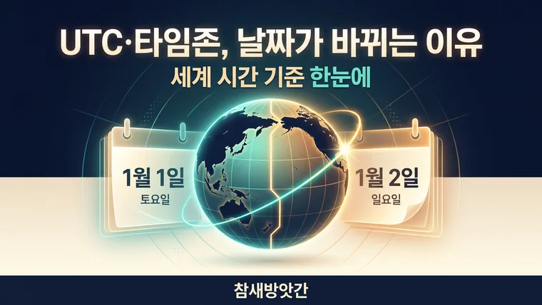

전 세계 시간의 기준, UTC와 타임존의 이해 및 날짜 변경선 계산
세계 시간의 표준은 UTC이고 한국 표준시(KST)는 UTC+9입니다. 해외 일정은 날짜 변경선과 서머타임까지 같이 확인해야 날짜가 어긋나지 않습니다.

해외 직구와 글로벌 업무에서 날짜가 어긋나는 진짜 이유
글로벌화 시대가 되면서 해외 직구로 한정판 상품을 구매하거나, 해외에 있는 거래처와 회의 일정을 잡는 일이 일상이 되었습니다. 그런데 "미국 동부 시간 기준 10월 25일 오전 9시 오픈"이라는 문구를 보고 한국 시간으로 환산했다가, 이미 이벤트가 끝나버렸거나 하루 일찍 접속해 대기하는 난감한 상황을 한 번쯤 경험해 보셨을 겁니다.
내가 직접 글로벌 프로젝트를 수행하며 시차를 확인해 보니, 단순히 몇 시간 더하고 빼는 수준을 넘어 'UTC(협정 세계시)'와 'GMT(그리니치 평균시)', 그리고 '날짜 변경선'의 원리를 정확히 이해하지 못하면 날짜 계산 실수가 계속 반복된다는 것을 알게 되었습니다. 오늘은 그 세계 시간 체계의 핵심 구조를 정리해 드립니다.
세계 시간의 절대 기준: UTC와 GMT의 차이
세계 시계를 이야기할 때 가장 흔히 접하는 단어가 바로 UTC와 GMT입니다. 이 둘은 실생활에서 거의 혼용되어 사용되지만, 만들어진 방식에 차이가 있습니다.
GMT (Greenwich Mean Time, 그리니치 평균시)
- 영국 그리니치 천문대를 기준으로 하는 전통적인 시간 기준으로, 지구의 자전을 관측해서 정한 시간입니다.
UTC (Coordinated Universal Time, 협정 세계시)
- 세슘 원자시계의 정밀한 진동수를 기반으로 만든 원자시로, 현대 전 세계의 컴퓨터 네트워크, 항공, 인터넷, 금융의 표준 시간입니다.
- 지구 자전 속도의 미세한 변화를 보정하기 위해 필요할 때 윤초(Leap Second)를 적용합니다.
대한민국 표준시(KST)는 UTC+9입니다. 즉, 협정 세계시보다 정확히 9시간 빠르다는 의미입니다. UTC가 오전 0시일 때 한국은 같은 날 오전 9시가 됩니다.
날짜 변경선(Date Line) 계산의 법칙: 동쪽과 서쪽의 비밀
태평양 한가운데를 지나는 '180도 경선' 부근에는 날짜 변경선이 위치해 있습니다. 이 선을 기준으로 어느 방향으로 이동하느냐에 따라 하루가 더해지거나 빠지게 됩니다.
- 서쪽에서 동쪽으로 이동할 때 (아시아 → 미주): 날짜 변경선을 넘어가면서 하루를 되돌려 세게 됩니다. (시간이 과거로 이동)
- 동쪽에서 서쪽으로 이동할 때 (미주 → 아시아): 날짜 변경선을 넘어가면서 하루를 더하게 됩니다. (시간이 미래로 이동)
예를 들어 한국(UTC+9)에서 미국 서부 LA(UTC-8, 표준시 기준)의 시간을 구하려면 한국 시간에서 17시간을 빼야 합니다. 이 때문에 한국이 월요일 오전일 때 LA는 아직 일요일 오후에 머물게 되는 것입니다. 서머타임이 적용되는 기간에는 LA가 UTC-7이어서 차이가 16시간이 됩니다.
해외 결제, 서버 점검, 비행시간 계산 시 활용법
글로벌 서비스를 이용할 때는 단순 시차뿐만 아니라, 특정 국가의 서머타임(DST) 적용 여부까지 복합적으로 계산해야 합니다.
- 해외 직구 세일 시간: 미국 사이트에서 공지하는 EST(동부 표준시), PST(태평양 표준시)가 현재 서머타임 적용 중(EDT, PDT)인지에 따라 1시간의 차이가 벌어집니다.
- 서버 및 시스템 점검: 게임이나 글로벌 소프트웨어의 점검 시간이 UTC 기준으로 안내될 때 한국 시간으로 변환하지 않으면 서비스 이용에 차질을 빚습니다.
글로벌 업무나 거래 시에는 수동으로 시간을 더하기보다 타임존 변환 도구를 활용하는 것이 안전합니다. 기준 도시와 대상 도시를 지정하면 서머타임이 반영된 현지 시각을 보여주는 도구를 쓰고, 날짜는 한 번 더 확인해 보세요. 복잡한 글로벌 일정 관리도 도구를 활용하면 오차를 크게 줄일 수 있습니다.
· 현대 세계 시간의 표준은 원자시 기반의 UTC이며, 한국 표준시(KST)는 UTC+9에 해당합니다.
· 태평양 날짜 변경선을 기준으로 동쪽(미주)으로 넘어가면 날짜가 하루 늦어지고, 서쪽(아시아)으로 넘어오면 하루 빨라집니다.
· 글로벌 라이브 이벤트나 직구 일정은 서머타임이 반영된 타임존 변환 도구로 확인하면 정확합니다.
이 글의 기준과 예시는 2026년 10월 기준입니다. 법령이나 제도가 바뀌면 내용이 달라질 수 있으니, 신고·계약·서류 제출 전에는 해당 기관에서 최신 기준을 확인하세요. 계산 결과는 참고용입니다.
🔮 다음 글 예고
다음 글에서는 수능과 자격증 시험 D-Day 카운트다운을 활용한 시간 관리를 다룹니다.